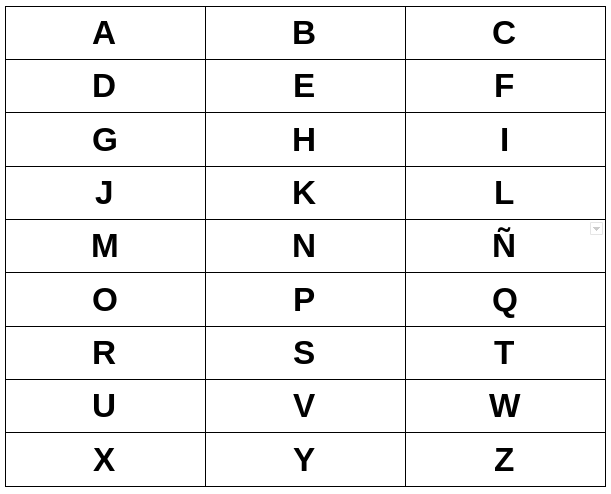

Hola, este proyecto es un encriptador de frases o palabras en el que sustituye cada letra de la palabra por un número, los espacios por un cero, los puntos por un / y las comas por un punto. Para saber los números que sustituye solo hay que imaginarse una tabla 3 x 9 en la que se colocaran cada letra, para buscar cada letra solo hay que buscar primero la fila y después la columna. Esto se explica mejor con la tabla a continuación:

El encriptador solo puede transcribir, de momento, de letras a números, seguiré trabajando en ello para que en la siguiente versión se pueda de números a letras.
Pero si quieres aportar ayuda te invito a contribuir en el código o si tienes alguna sugerencia escribirme a mi Twitter.